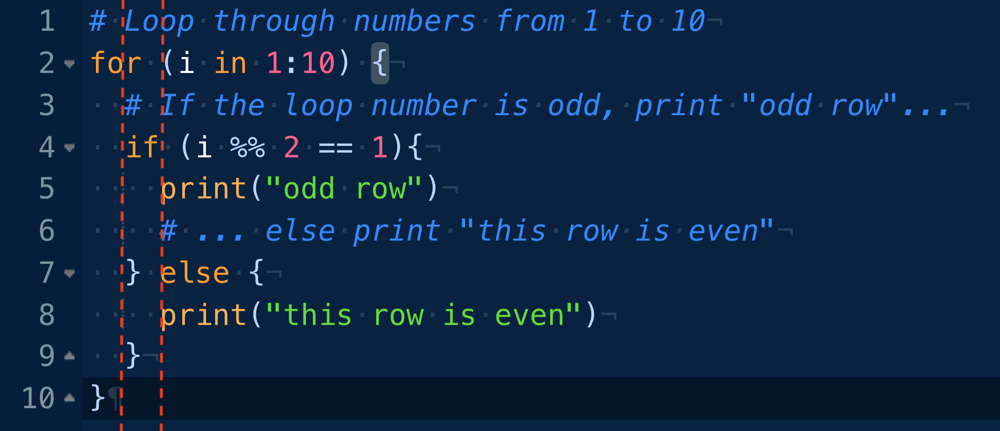

# assign `g`, the constant for gravitational acceleration
g <- 9.80665 # units are m/s^2Programming Style Guide
As much as possible, your scripts, programs, and functions should be written in a consistent programming style, which makes them easier to read, write, and understand. Some programmers are very opinionated as to what stylistic conventions to follow, and as you become more familiar with R and more practiced with writing code, you will likely settle on a set that you find particular sensible. I try (not always successfully!) to follow the recommendations below, which are largely consistent with those in the much-more-complete {tidyverse} Style Guide.
File Type Conventions
- Use the uppercase “.R” extension for files containing R code
- Use the “.RData” extension for files that contain binary data
- Use the “.qmd” extension for Quarto documents
- Use the “.Rmd” extension for RMarkdown documents
- Use lowercase file extensions for other standard file types (e.g., “.csv”, “.jpg”, “.docx”, “.xlsx”)
Stylistic Conventions
Use a space before and after the standard backwards assignment operator
<-and other infix operators (except for=used in function arguments), but not around parentheses or brackets:x <- "Hello"mean(x, na.rm=TRUE)
Even though the syntax is valid, avoid using
=for assignment, except when assigning values to named arguments in a function:rnorm(n=1000, mean=50, sd=10)
Even though the syntax is valid, do not abbreviate
TRUEandFALSEtoTandFGenerally avoid using the forward assignment operator
->except at the end of a sequence of piped operations:df <- df |> select(name, age, sex, body_weight)df |> select(name, age, sex, body_weight) -> df
Use a space after a comma when listing the arguments of a function:
x <- c(4, 5, 6, 7)paste("Data science", "is", "cool", sep=" ")
Programming Conventions
Use simple, single characters for temporary variables, like indices:
x <- 1:10for (i in 1:100) {print(i)}
Whenever possible, use short, descriptive names for variables:
rate <- 5.6sex <- c("M", "F", "F", "M", "F", "M", "F", "M")
For longer, multi-word variable, function, or argument names, use either camelCase or snake_case:
interestRate <- 0.45say_hello <- function(x) {print(paste0("Hello, ", x))}print_n_rows <- function(x, n_rows=10) {print(x[n_rows, ])}
Include default values in your function definitions:
- e.g.,
n_rows=10in the preceding example
- e.g.,
Include error checking in your functions
For support files that contain a single function, name the file to match the name of the function defined in the file:
- “prettyPrint.R” for a file that contains the function
prettyPrint() - “rescale_image.R” for a file that contains the function
rescale_image()
- “prettyPrint.R” for a file that contains the function
Code Formatting Conventions
Try to keep lines of code to less than 80 characters
Use comments liberally to make notes about what your code does
- R ignores lines starting with the hashtag character (
#) as well as text after this character until it encounters a line break
- R ignores lines starting with the hashtag character (
- Use a single
#to introduce a comment, and separate comments from code with a single empty line before the comment
x <- 3
# Now add 2 to x...
x <- x + 2- In RStudio, use four dashes
----at the end of a comment line to indicate a section… this should allow for code folding in your scripts:
# Section 1 ----
x <- 5
y <- 3
z <- x + y^2NOTE: In RStudio, you can highlight several lines and then use
⌘-SHIFT-Cto comment/uncomment multiple lines simultaneously!
Use indentation to identify (nested) blocks of code:
- Use spaces rather than the invisible tab (
\t) character for indentation - Use consistent indentation (e.g., 2 spaces, 4 spaces) to keep your code looking neat
- Use spaces rather than the invisible tab (

- Use a linter (see the “Addins” section under the Tools menu or in the RStudio toolbar) to catch common style “errors”
NOTE: In RStudio, you can use highlight a chunk of code within an R code block and then use
⌘-SHIFT-Ato try to neatly and consistently reformat your code. Also, when working in the text editor in RStudio, holding the option (⌥) key while selecting with the cursor allows you to highlight/edit replace text in multiple rows simultaneously.